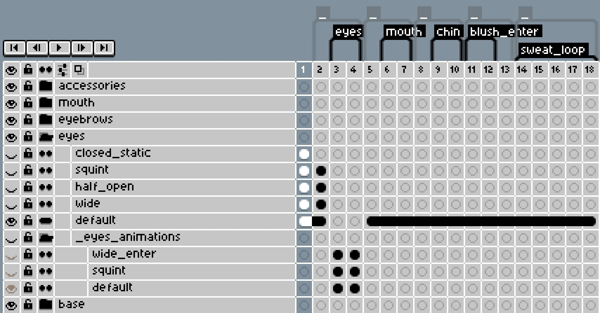

The Challenge
Manual artwork for every emotion
Each expression required drawing a complete new face, individual file exports, and manual setup in the game engine
Painfully slow iteration
Testing different combinations took hours, making it impractical to achieve the expression variety needed for dynamic characters

Three-stage automation: Tag → Process → Generate
The Solution
Smart Tag System
Artists tag expression components (eyes, mouths, eyebrows) in Aseprite using simple naming conventions. The system reads these tags automatically.
Cross-Tool Automation
Custom tools extract the tagged data, generate optimized spritesheets, and create complete Godot animation tracks. No manual setup required.
Live Animation Preview
Test any expression combination instantly in the game engine with full animation playback. No exports, no waiting.
The Innovation
Modular Expression System
•
Artists create reusable facial components instead of complete faces
•
Components automatically combine into fully-animated expressions
•
No manual setup required between art and game engine

Simple tag setup drives the entire automation
The Results
Before
Process
Drawing every face from scratch
Time
Days for basic emotions
Workflow
Export errors between programs
After
Process
Modular components combine automatically
Time
Full characters in hours
Workflow
Live preview with instant animation testing